JavaScript w wersji ECMAScript 2015+ (ES6+). ECMAScript jest to
ustandaryzowany przez organizację ECMA skryptowy język programowania.
Elementy składowe JavaScript: wartości, operacje porównywania,
literały, zmienne, obiekty, funkcje. Pliki zawierające kod SavaScript
mają rozszerzenie .js mają też swój znacznik - "script". Kod JS
uruchamia się raz - po załadowaniu strony, może też działać później,
jeśli ma odpowiednie instrukcje.
Elementy JavaScript
Wartości
Wartości są dla JavaScript tym, czym liczby dla matematyki.
Wartością może być liczba, może być też napis.
Zmienne
Zmienna w JS jest pewnym rodzajem połączenia, między nazwą której
chcemy użyć a wartością. Coś jak podstawianie pod zmienne w
matematyce (np x=3). Zmienna to nie wartość, zmienna może wskazywać
na jakąś wartość.
Lekcja 1 - dodajemy skrypt na stronie
Sposoby dodawania skryptu
Znacznik script dodajemy na samym dole, przed zamknięciem znacznika
body. W znaczniku wpisujemy funkcję alert
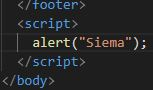 . Funkcje składają się z nazwy funkcji, nawiasów otwartych i
parametrów. Znacznik "script" zadziała, ale podobnie jak z CSS,
lepiej umieścić kod w oddzielnym pliku, a w znaczniku "script"
podpinamy plik z kodem JS za pomocą atrybutu "src":
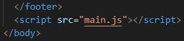
Za pomocą znacznika script możemy dołączyć skrypt albo bezpośrednio
wpisując kod do środka, albo za pomocą dołączonego pliku. Średniki
na końcu lini nie są konieczne, warto je jednak stosować.
console.log i zmienne.
Polecenie "console.log" - funkcja, która pozwala na wyświetlenie
tekstu lub wartości.
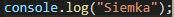
nie wyświetla żadnego komunikatu bezpośrednio na stronie, żeby
zobaczyć jego działanie odpalamy devtoolsy i wchodzimy do zakładki
"console". Pojawił się tam napis, który umieściliśmy w skrypcie.
Tekt, który chcemy wyswietlić musimy opakować w apostrofy ''. Ważna
jest kolejność zapisu w pliku z kodem JS.
Zmienne. Stworzyłem powiązanie między name a wartością 'Michał' oraz
między age a wartością 32. Używamy angielskich nazw zmiennych, przy
nazwach używamy camelCase.
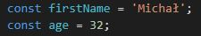
funkcja console.log powinna wypisać wartości które powiązaliśmy z
nazwami name i age.
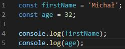
Efekt możemy zobaczyć w konsoli w devtoolsach:
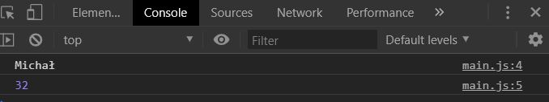
Możemy opakować nasze zmienne w tekst, używając literału. Używamy
``(backtick) a zmienne opakowujemy w ${}.
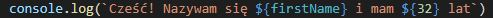
Efekt zobaczymy w konsoli. Jesli zmienimy imię na inne, to wartość
firstName zostanie podmieniona. Tak samo bedzie dla wartości age.
Typy danych i immutability.
Zmienne w JS. Są 3 sposoby definicji zmiennych: LET, CONST i VAR.
Definiowanie zmiennych w JS to tworzenie połączenia między nazwą a
wartością. Zmienną (jej nazwę) definiujemy tylko raz.
Const - tworzy zmienną, która ma stałe połączenie z jedną wartością.
Możemy pisać kod js w konsoli. W przykładzie podpinamy name pod
wartość Michał. Potem mogę wypisać wartość zmiennej. Próbując zmienić
wartość konsola wyrzuciła błąd. Nie można przepisać zmiennej, która
jest stała(const=constant=stała). Z liczbami jest tak samo. Zmienna
Const pozwala stworzyć stałe wiązanie między nazwą zmiennej (name,
age) a konkretną wartością, i tego połączenia nie możemy edytować.
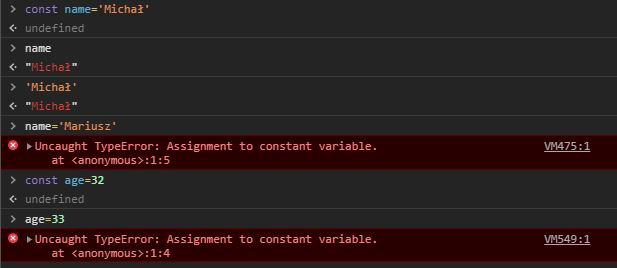
let - tworzy zmienną, w której można zmieniać to przypisanie nazwy do
wartości. Nie można utworzyć dwóch zmiennych o tej samej nazwie
(error). Dwie zmienne mogą wskazać na tą samą wartość. To połączenie
można nadpisać(newName='Mariusz'). Edytowano połączenie między nazwą
newName i wartością. Wartość Michał dalej istnieje, nie została
nadpisana. (Przepięto (nie podmieniono) wartość zmiennej z Michała na
Mariusza). To nie musi byc ten sam typ danych. Liczba też zadziała.
Przy definiowaniu zmiennych nie wskazujemy na to, czy będzie to napis,
czy liczba.
Typy proste w JS:
-String - tekst, oznaczamy '' lub ""(lepiej '')
-Number
-Bigint - duża liczba, większa niż 2^53
-boolean - true lub false
-null - wartość celowo niezdefiniowana
-undefined - brak definicji
-*symbol - tworzy "unikalne opakowanie"
Wpisując true/false dostaniemy rodzaj wartości boolean. Możemy wpisać
null, mp gdy nie wiemy co bedzie w naszej zmiennej. Np póxniej
ustawimy carColor, ale teraz nie wiemy na jaki. Jak wpiszemy coś czego
nie zdefiniowalismy wyskoczy undefined. Wpisując typeof sprawdzamy,
jakiego typu jest zmienna.
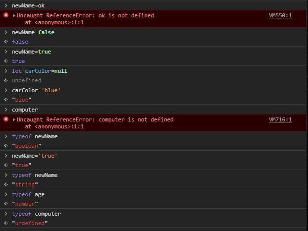
Stworzyłem nową zmienną, przypisuję do niej x - w przeglądarce silnik
odpytuje x na co on wskazuje (wartość 10), y tworzy połączenie do 10.
Jeśli zmienimy x y się nie zmieni, bo on w dalszym ciągu jest
połączony z wartością 10, a nie x (x to zmienna, a zmienna to nie
wartość). Operator przypisania nie tworzy nowych zmiennych, tworzy
połączenie i to połączenie nam później zwraca.
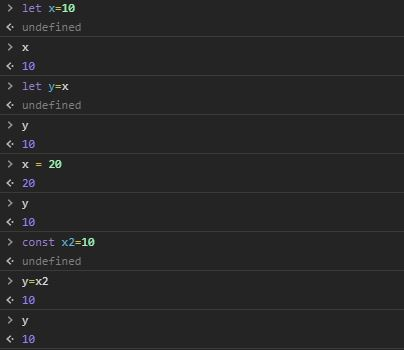
Immutability - nie możemy zmieniać wartości primitive values w JS. To
co zmieniamy to połączenie między nimi, a zmiennymi. To co może się
wydawać, że zmieniamy wartość, to tak naprawdę zmieniamy połączenie
między nazwą zmiennej a wartością .
Document Object Model
Document Object Model czyli obiektowy model okumentu. To co widzimy w
devtoolsach to jest DOM. Plik HTML, ani źródło strony wyświetlone w
przeglądarce to nie jest DOM (HTML to instrukcja, a skręcony mebel to
DOM.). DOM jest miejscem, gdzie możemy się komunikowac ze stroną
internetową za pomocą JS i ją modyfikować.
Jeśli zmienimy nazwę klasy konsola zwróci nam null, ponieważ wartość
jest zdefiniowana (heading), ale nie ma takiego elementu na stronie
(jesli w queryselector wybierzemy element którego nie ma w DOMie,
dostaniemy null, a nie undefined). Aby zmiana klasy nie miała wpływu
na JS można stworzyć modyfikator(np main-heading--js)
document.querySelector('.selector') - zwraca nam node (węzeł) z
HTML-a, selektor zapisywany zgodnie z css. Pozwoli podpiąć się pod
wartości (elementy) na stronie.
Jeśli coś nie chce wyjśc możliwe, że nie masz scriptu popdpiętego
na stronie(lub podstronie), z której chcesz coś wywołać.
Podpinamy się pod nagłówek .main-heading, potem robimy console.log
headingu. W efekcie w konsoli dostajemy element (wartość, do której
się przypięliśmy). Możemy wybrać inne elementy np nawigację
(navigation), wypiszą się inne dzieci tego elementu.
Łączenie się z DOM - możemy modyfikować treść tego elementu za pomocą
własności inner.HTML (wartość w backticku, nie w ''). To co sobie w
tym miejscu wpisaemy zostanie "wstrzyknięte" do elementu. Jeżeli
zbadamy ten element za pomocą devtoolsów zobaczymy zmodyfikowany
tekst.
I to jest dopiero nasz DOM, faktyczny stan dokumentu po załadowaniu
treści już po przekształceiach związanych z JS i po załadowaniu się
całej treści (złożony mebel). Dopiero to jest analizowane przez
przeglądarke (w źródle strony, które zobaczymy w przeglądarce
heading jest jeszcze przed przekształceniem).
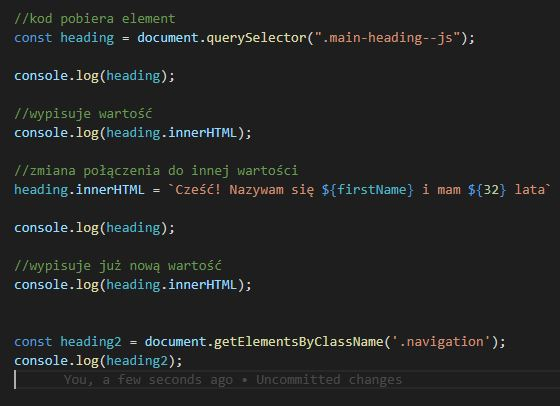
Są inne metody żeby dostać się do elementu np
document.getElementsByClassName ale ona zwraca inną rzecz. jest
jeszcze document.getElementsById. My bedziemy korzystać z
queryselectora, dzięki temu bedziemy korzystać ze składni z CSS.
Funkcje w JS
Funkcje definujemy po to, żeby:
-nie używać kodu, który się powtarza (DRY - dont repeat yourself).
-zwiększenie czytelności kodu
-łatwiejsze szukanie błędów
-odpowiedzialność za wykonywane zadania w jednym miejscu
Prosta funkcja mnożenia
Elementy funkcji: deklaracja, nazwa funkcji, parametr, słowo
kluczowe ( tutaj return, definiuje nam to co ma być zwrócone) i
wynik. nawiasy sześcienne ograniczają blok kodu (funkcja składa się
z tego co pomiędzy nimi). Po zdefiniowaniu funkcję należy wywołać,
inaczej nie dostaniemy żadnej informacji zwrotnej.
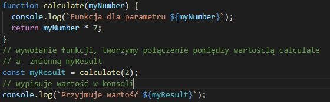
Pod argument funkcji możemy podpiąć zmienną age, która ma wartość
32. Zmienna age pozostanie niezmieniona, bo wartości proste są
niemutowalne. To co przekazujemy do funkcji to wskazanie
(połączenie) na wartość 32 jako argument tej funkcji. Zmienna
myNumber i age wskazują na wartość age.
Słowo kluczowe return - sprawia, ze wynik zostanie zwrócony, jesli
go skasujemy dostaniemy undefined. Operacje się wykonają ale nie
mogę stworzyć połączenia do wyniku tej operacji, zmienna myResult
dostaje undefined. Pod zmienną myResult nie zawsze musi być liczba,
może byc też string. To co dostajemy na wejściu nie musi być tym
samym typem danych co zostanie zwrócone.
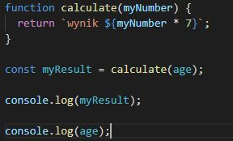
Funkcja powitalna
Możemy podać więcej niż 2 argumenty. Argumenty funkcji age i
firstname to nie bedzie to same age i firstname które stworzyliśmy
wcześniej. Jeśli jakiegoś argumentu nie podamy dostaniemy undefined
(argument niezdefiniowany). jeśli w wywołaniu funkcji wpiszemy
argumenty w innej kolejności łyknie bez problemu. Funkcję możemy
wywołać wiele razy w różnych miejscach w kodzie.
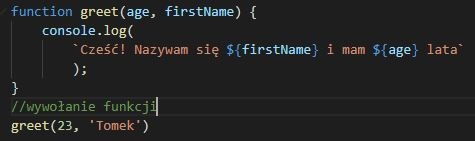
Funkcja wypełniająca content treścią.
Za pomocą funkcji można uzupełnić treść w kilku róznych elementach.
W tym przypadku funkcja nie posiada return.
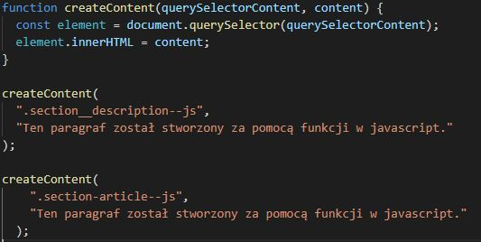
Arrow functions
Arrow functions - inny sposób zapisu funkcji w JS.
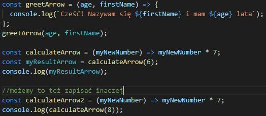
Funkcja Fat arrow:
-skraca zapis deklaracji funkcji
-zwiększa czytelność (??)
-Nie tworzy nowego kontekstu this, nie ma dostępu do arguments i
super
-nie jest zamiennikiem tradycyjnej funkcji (w wkiększości przypadków
nie widać róznicy)
Obiekty
Prawie wszystko w JS jest obiektem (nawet typy proste, które obiektem
nie są - zachowują się jak obiekt). Obiekt to
struktura danych. Obiekt składa się z własności
(property) i a funkcje w obiekcie to metody (methods).
Po utworzeniu obiektu (deathStar) możemy go zobaczyc w konsoli za
pomocą console.log. Widzimy wszystkie własności tego obiektu, wypisane
alfabetycznie, niezależnie od kolejności. Te własności tworzą pary
key: value (klucz: wartość). Klucz musi być unikalny w ramach obiektu.
Wartość to: primitive/funkcja/zagnieżdżenie.
Zagnieżdżenie - obiekt w obiekcie. Dot notation. Np console - obiekt
.log metoda znajdująca się w obiekcie. (inne przykłady inner.HTML albo
document.querySelector). Wpisując console.log(console) zobaczymy listę
wszystkich funkcji, które ma obiekt console.
Bracket notation. Zamiast używać kropek możemy w nawiasach
kwadratowych wpisać nazwę własności, podajemy ją jako stringa np
'diameter'.
Immutability w obiektach
Nie możemy zmieniać wartości primitive values w JS. To co zmieniamy,
to połączenie między nimi, a zmiennymi.
Logika w JS
Porównania - słowo kluczowe if. Zwraca true lub false.
Operatory porównania: >, <, >=, <=, ==, === (sprawdza typeof - ścisłe
porównanie), !=, !== (sprawdza typeof). Znaku porównania w JS używamy
np przy zmiennych. Żeby to odróznić używamy symbolu ==.
JS posiada wartości false ( false, 0, '' "" ``- pusty string, null,
undefined, Nan - not a number zawsze zwracają nam false) i truthy(cała
reszta - 'string', numery, {}, [], true itd)
AND (&&) oraz OR (||). Złożone warunki logincze. And wykona się jeżeli
wszystkie warunki są prawdą. OR sprawdzi, czy chociaż jeden jest
prawdą.
Operator NOT (!). Odwraca wartość wyrażenia logicznego. !false =>
true, !true => false.
Słowo kluczowe else. Pozwala na budowanie bloku kodu który się wykona
np wtedy, jeśli wartość logiczna naszego wyrażenia będzie fałszem.
Jest jeszcze Else if - zdefiniowany else.
Switch - używamy głównie, jeśli znamy dokładne wartości jakie może
osiągnąć nasza zmienna i na bazie tych wartości działamy
Zapis skrócony.
JS: Eventy
Robimy przycisk który po kliknięciu zmieni nam header. Musimy pobrać
przycisk, dodać do niego listener, który będzie działał na kliknięcie
i podpiąć pod to jakąś funkcję. Możemy też w eventListenerze wpisać
funkcję strzałkową. Eventlistenerów z funkcją click używamy głównie do
buttonów, dla innych elementów możemy użyc innych mouse events jak np
mouseover.
JS: Eventy
Robimy hamburgera. Potrzebujemy:
Nawigacja
Styl do nawigacji na mobile
styl do nawigacji desktop
przycisk do pokazywania/ukrywania (zmiana klasy)
kod js do podpięcia się pod przycisk
kod js do zmiany klasy
Obiekt classList (add/remove/toggle/contain) pozwala na
dodawanie/usuwanie/przełączanie/contains - element logiczny który
zwraca true/false jesli element posiada daną klasę. klasy z elementu.
W przykładzie wrzuciłem dodatkową klasę do nagłówka. W ten sposób
możemy manipulować klasami, dodawać modyfikatory dzięki czemu elementy
będą zachowywać się inaczej kiedy wykonamy jakąś akcję na stronie. W
tych metodach nie używamy kropek.